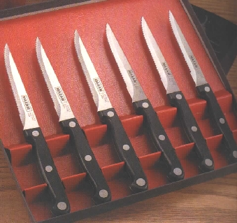

#111395 345 2005-10-30T09:26:05Z Shizzle 
And its guts spill out onto the floor.
#111396 346 2005-10-30T09:28:40Z Shizzle
Spinning knives appear and penetrate his/hers brain.
I love that word>>>>>>>>^^^^^^
edit: Sorry bout double posting, it didnt show the 1st time.
#113515 21 2005-11-10T07:09:49Z Shizzle I like the idea except for the basketball thing. I dont see whats wrong with a minigames section, since it would appeal to a lot of people that probably just dont post on the boards. And if you didnt like it you would just ignore it. And even if you didnt want it you could still give it a try. Every game series thing has got to have a try at something different, even if it does screw them up, but since it would be a minigame thingamijig people that think its "not N" would stay away from it.